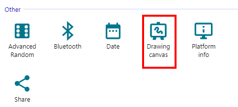

Desarrollo de un juego de carreras retro en Construct 3
Alonso Canales@alce_x
Usa Espacio para avanzar.
About me
- ¡Hola! Soy Alonso.
- Soy co-fundador de Smarto Club, y recientemente lanzamos nuestro primer juego, Teacup.
- Descubrí Construct en una game jam organizado por el Pablo en la DUOC, y desde entonces soy fanático.
Entre mis mayores logros de Construct, se encuentra Dreams and Reality.
Contexto
Todo partió de chico con un CD que me regalaron.
Uno de los juegos que incluia era Super Hang-On.
Que en verdad era un reskin de Out Run.
Un día me propuse como desafio recrearlo en Construct...
Y este fue el resultado.
Disclaimers
1. ¡No soy un genio! Me basé en el trabajo de Jake Gordon.
(Y el se basó en el trabajo de Louis Gorenfeld)2. Por temas de tiempo, veremos solo una parte de la implementación.
(¿Pero tal vez eso sea suficiente para que ustedes desarrollen el resto?)3. ¡Esta presentación está online! Pueden encontrarlo en https://construct-day.netlify.app/
(¡Gracias reveal.js!)Creando un mundo pseudo-3D
- Uno podria pensar que vamos a necesitar matemática avanzada.
- Sin embargo, lo que estamos haciendo es pseudo-3D, no 3D de verdad.
- Solo necesitamos geometria del colegio: semejanza de triangulos.
Y bueno... ¿para que nos sirve esto?
Formalicemos lo anterior para derivar algunas fórumlas que nos servirán para usarlo de verdad.
Debemos poder realizar tres pasos:
- Translación: pasar de coordendas de mundo a coordenadas de cámara
- Proyección: pasar de coordendas cámara a coordenadas del plano de proyección
- Escalamiento: pasar de coordendas proyección a coordenadas de pantalla
Translación
\[x_{cam} = x - camera_x \\ y_{cam} = y - camera_y \\ z_{cam} = z - camera_z \]Proyección
\[x_{proj} = x_{cam} \cdot \frac{d}{z_{cam}} \qquad y_{proj} = y_{cam} \cdot \frac{d}{z_{cam}} \]Escalamiento
\[x_{screen} = (w/2) + (w/2) \cdot x_{proj} \\ y_{screen} = (h/2) - (h/2) \cdot y_{proj} \]La Pista de Carreras
Sabemos calcular la proyección... ¿pero qué queremos calcular?
Si nos fijamos, el "personaje" es un sprite que siempre está en la misma posición...
...por lo que lo que nos interesa proyectar es la pista.
Descomposición Pista
Tenemos listo nuestras fórmulas de proyección y sabemos que queremos proyectar...
...así que ¡estamos listos para pasar a Construct!
Pasando a Construct
Ocuparemos scripting para escribir el rendering de pista de carreras.
Los ACE son ideales para lógica de juego, pero son menos ideales para algortimos o estructuras de datos complejas.Lo primero a resolver... ¿cómo dibujamos esto a la pantalla?
Podemos usar el Drawing Canvas.
Solo hay un problema:
- Queremos dibujar en el Canvas desde nuestro scripting...
- ...pero no podemos aceder a las funciones de dibujo de Canvas desde la interfaz de scripting.
Mi "hack" para este tipo de ocasiones es ocupar las funciones de Construct...
...y luego aceder a ellas a través de scripting.
runtime.callFunction("DrawingCanvas.AddPoint", x, y);
runtime.callFunction("DrawingCanvas.FillAndResetPoly", color);
runtime.callFunction("DrawingCanvas.Clear");
Recordemos como habiamos decompuesto la pista.
Según lo anterior, podemos definir algunas variables globales.
Con estas variables, podemos definir una función para generar la pista:
export function GenerateTrack(runtime, length) {
for (let n = 0; n < length; n++) {
track.push({
p1: {
world: { x: 0, y: 0, z: n * runtime.globalVars.SEGMENT_LENGTH },
translate: { x: 0, y: 0, z: 0 },
screen: { x: 0, y: 0, w: 0 }
},
p2: {
world: { x: 0, y: 0, z: (n+1) * runtime.globalVars.SEGMENT_LENGTH },
translate: { x: 0, y: 0, z: 0 },
screen: { x: 0, y: 0, w: 0 }
},
color: Math.floor(n / runtime.globalVars.RUMBLE_LENGTH) % 2 ?
runtime.globalVars.COLOR_DARK : runtime.globalVars.COLOR_LIGHT
});
}
}
Recordemos ahora la fórmulas de proyección.
Vamos a hacer un par de simplificaciones para facilitar la lectura del código.
Con lo anterior definimos la siguiente función:
export function ProjectPoint(p, runtime) {
const w = runtime.objects.DrawingCanvas.getFirstInstance().surfaceDeviceWidth;
const h = runtime.objects.DrawingCanvas.getFirstInstance().surfaceDeviceHeight;
const r_w = runtime.globalVars.ROAD_WIDTH;
p.translate.x = p.world.x - camera.x;
p.translate.y = p.world.y - camera.y;
p.translate.z = p.world.z - camera.z;
const scale = camera.d / p.translate.z;
p.screen.x = Math.round(w / 2 + p.translate.x * w / 2 * scale);
p.screen.y = Math.round(h / 2 - p.translate.y * h / 2 * scale);
p.screen.w = Math.round(scale * r_w * w / 2);
}
Con lo anterior listo, podemos agregar el código para dibujar la pista.
export function RenderTrack(runtime) {
runtime.callFunction("DrawingCanvas.Clear");
for (let n = 0; n < runtime.globalVars.DRAW_DISTANCE; n++) {
const segment = track[n % track.length];
ProjectPoint(segment.p1, runtime);
ProjectPoint(segment.p2, runtime);
RenderSegment(segment, runtime);
}
}
export function RenderSegment(segment, runtime) {
runtime.callFunction("DrawingCanvas.AddPoint",
segment.p1.screen.x - segment.p1.screen.w / 2, segment.p1.screen.y
);
runtime.callFunction("DrawingCanvas.AddPoint",
segment.p2.screen.x - segment.p2.screen.w / 2, segment.p2.screen.y
);
runtime.callFunction("DrawingCanvas.AddPoint",
segment.p2.screen.x + segment.p2.screen.w / 2, segment.p2.screen.y
);
runtime.callFunction("DrawingCanvas.AddPoint",
segment.p1.screen.x + segment.p1.screen.w / 2, segment.p1.screen.y
);
runtime.callFunction("DrawingCanvas.FillAndResetPoly", segment.color);
}
¿Y donde lo llamamos?

En lo personal, me gusta tenerlo en un event sheet.
Y aquí vemos el resultado...
Implementando el jugador
- ¡Tenemos una pista de carreras!
- ...pero no podemos movernos.
- Por suerte, no es difícil, pero tiene una pilleria.
Como comentaba antes, basta con poner un sprite encima de la pista.
Y basta con un poco de eventos para animarlo.
Para moverse por la pista, definimos unos variables.
Para genera el efecto de movimiento, movemos la cámara.
¡Y estamos! ¿...o no?
Arreglando el loop
¿Qué acaba de pasar?Hay dos problemas con el código como esta escrito:
- No se fija en cuanto se ha movido la cámara a la hora de proyectar segmentos.
- No se fija en si el segmento está detrás de nosotros a la hora de dibujarlo.
Podriamos arreglar esto de distintas maneras...
...pero pensando que queremos hacer una pista que se repite, lo arreglaremos de una manera específica.
Hay 3 partes que debemos arreglar para conseguir una pista que se repite:
- La cámara deberá volver al principio de la pista cuando llegue al final.
- Debemos considerar en que segmento estamos a la hora de partir a proyectar.
- Si es que llegamos al final de la pista, debemos dibujar el principio de la pista como si estuviese a continuación.
1. La cámara deberá volver al principio de la pista cuando llegue al final.
2. Debemos considerar en que segmento estamos a la hora de partir a proyectar.
export function RenderTrack(runtime) {
runtime.callFunction("DrawingCanvas.Clear");
const base_segment = Math.floor(camera.z / runtime.globalVars.SEGMENT_LENGTH);
for (let n = 0; n < runtime.globalVars.DRAW_DISTANCE; n++) {
const segment = track[(base_segment + n) % track.length];
ProjectPoint(segment.p1, runtime);
ProjectPoint(segment.p2, runtime);
RenderSegment(segment, runtime);
}
}
3. Si es que llegamos al final de la pista, debemos dibujar el principio de la pista como si estuviese a continuación.
export function RenderTrack(runtime) {
runtime.callFunction("DrawingCanvas.Clear");
const base_segment = Math.floor(camera.z / runtime.globalVars.SEGMENT_LENGTH);
for (let n = 0; n < runtime.globalVars.DRAW_DISTANCE; n++) {
const segment = track[(base_segment + n) % track.length];
const has_looped = track.indexOf(segment) < base_segment ? true : false;
ProjectPoint(segment.p1, runtime, has_looped);
ProjectPoint(segment.p2, runtime, has_looped);
RenderSegment(segment, runtime);
}
}
export function ProjectPoint(p, runtime, has_looped) {
const w = runtime.objects.DrawingCanvas.getFirstInstance().surfaceDeviceWidth;
const h = runtime.objects.DrawingCanvas.getFirstInstance().surfaceDeviceHeight;
const r_w = runtime.globalVars.ROAD_WIDTH;
p.translate.x = p.world.x - camera.x;
p.translate.y = p.world.y - camera.y;
p.translate.z = p.world.z - camera.z;
if (has_looped) {
p.translate.z += track.length * runtime.globalVars.SEGMENT_LENGTH;
}
const scale = camera.d / p.translate.z;
p.screen.x = Math.round(w / 2 + scale * p.translate.x * w / 2);
p.screen.y = Math.round(h / 2 - scale * p.translate.y * h / 2);
p.screen.w = Math.round(scale * r_w * w / 2);
}
¡Y finalmente estamos!
Para cerrar...
- Si quieren seguir, les recomiendo revisar el tutorial de Jake Gordon.
- Puede descargar el proyecto desde este enlace.
- O pueden ver mi versión original del proyecto, escrito 100% con eventos.
¡Gracias por su tiempo!
Desarrollo de un juego de carreras retro en Construct 3
Alonso Canales@alce_x